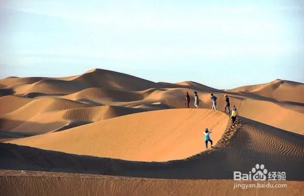

塔克拉玛干沙漠 旅游攻略
塔克拉玛干沙漠，中国最大的沙漠，
是走进之后出不来的地方。是世界上最大的流动沙漠
，有33万平方公里，
东西长有1000公里之多，南北宽400公里。
小编2018年10月旅游攻略叙说如下，可以帮助大家顺利旅游。
一，位置与距离。沙漠位于新疆南疆塔里木盆地的中心，在巴音郭楞、阿克什、喀什、
和田四个地区的界线之内。
二、沙漠特色。沙漠四面是高山，有神秘和奇幻的色彩，
复合型的沙山和沙龚形如条条巨龙，塔形沙丘似蜂窝、似鱼鳞变幻莫测。
圣墓山、风蚀蘑菇景观奇特。这里风沙活动频繁，流动的沙丘有80%以上。游人可以看见远方的沙漠海市晨楼。
三、沙漠气候。这里是暖温带沙漠气候，夏天高温可达摄氏67.2度，昼夜温差可以达到摄氏40度以上，
冬部冬季有时在摄氏零下20度以下。沙漠旅游要选择合适的气候条件，不要乱来，搞得不好会适得其反。
四、自然景观。沙漠浩瀚震慑人心，在这里坐车观光如似荡舟在大海之中，景观无边无际。
胡杨林与洼地池水的倒影如梦似幻。例如由轮台往南100多公里的胡杨景观美丽好看，小编看得如痴似醉。

五，旅游线路。 坐车游。从轮台到民丰游玩500公里沙漠公路。
探险穿越。走于田至墨玉，或者走于田至阿克苏。其中于田大河线路难度较大。

六、沙漠旅游最好的交通工具是骡驼，很多游客选择骑行骡驼。